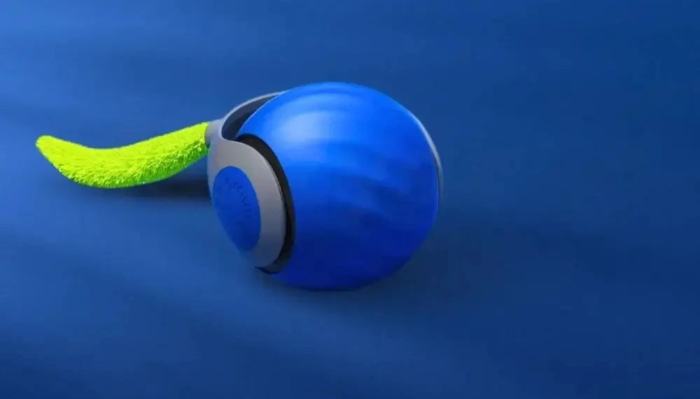
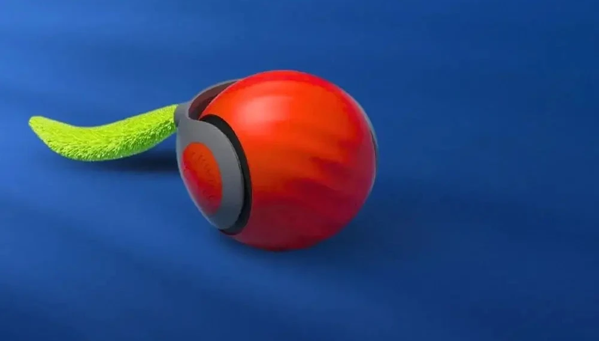
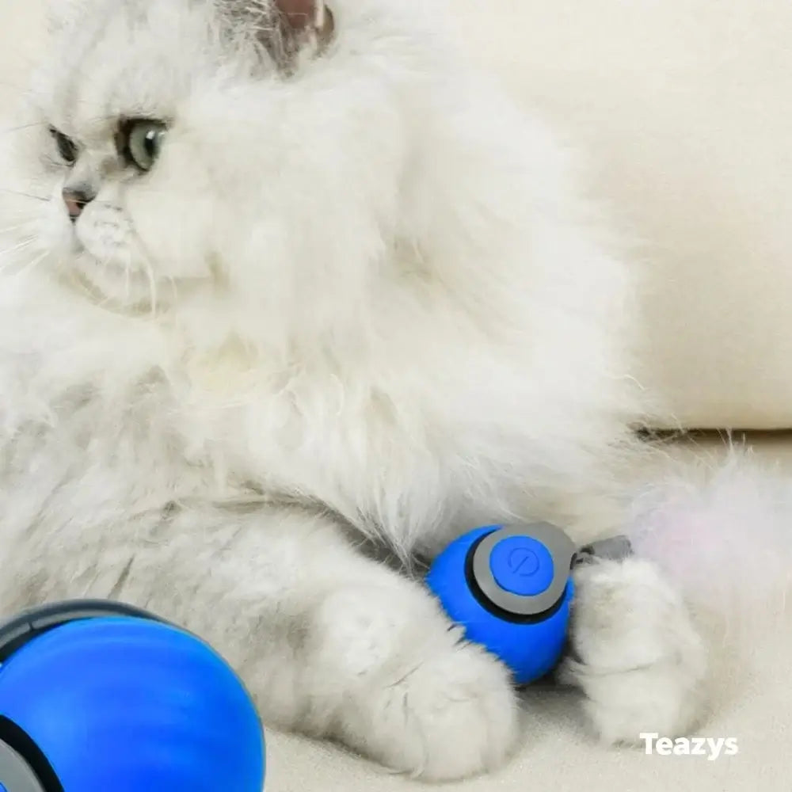
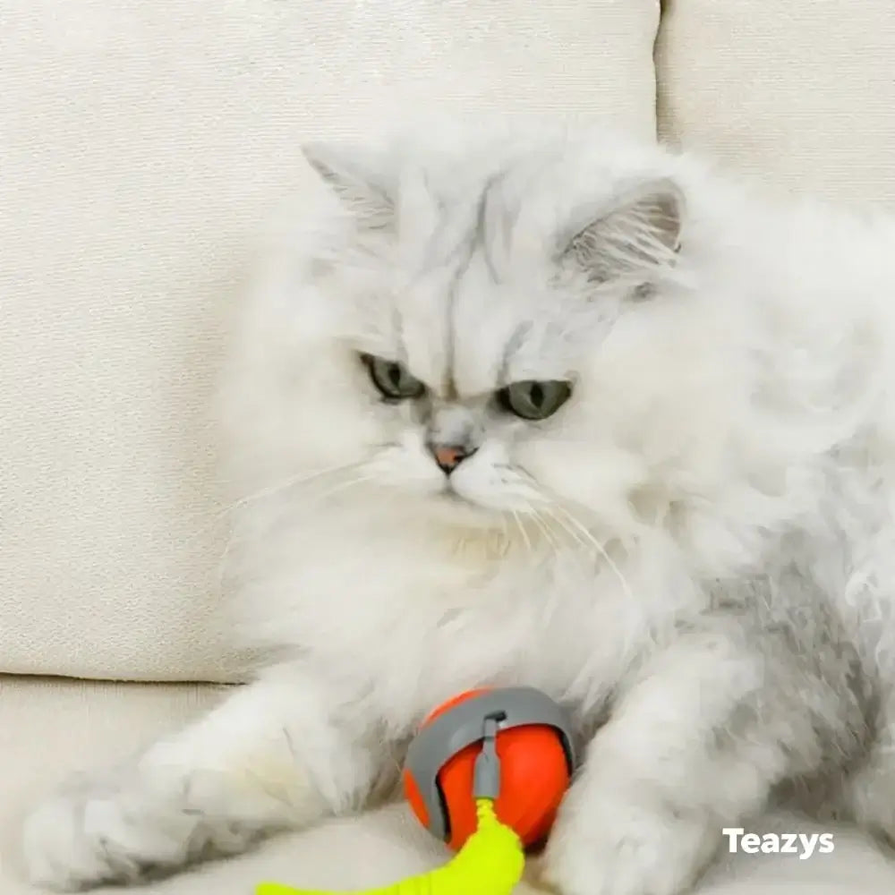
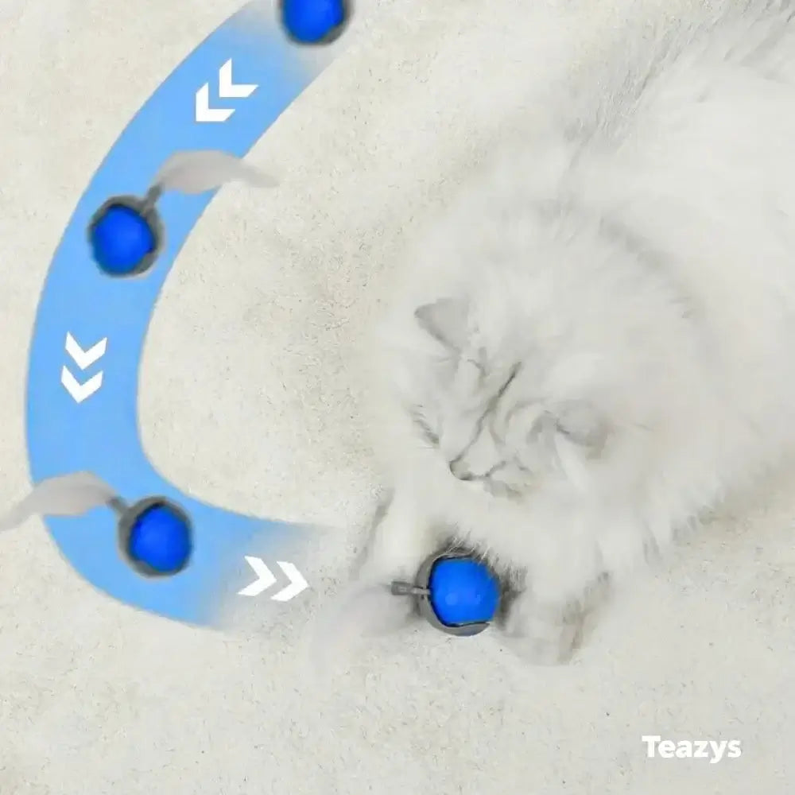
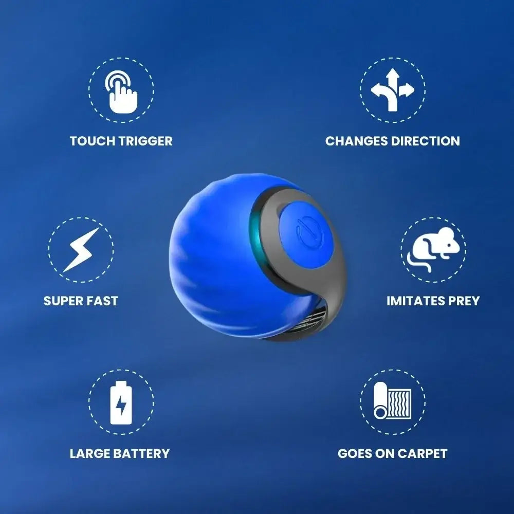
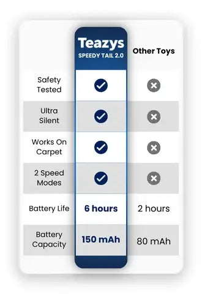

A bola interativa que se move sozinha como uma presa de verdade. Escolha seu kit:
Gatos são caçadores por natureza. Quando ficam o dia todo parados, vem o tédio — e com ele o estresse, o sedentarismo, os móveis arranhados e aquele miado insistente de madrugada.
O problema quase nunca é o seu gato. É a falta de estímulo. E é exatamente isso que o Instinto Felino resolve.
Sem configuração complicada. Tire da caixa, carregue e pronto.
Conecte o cabo USB-C que vem na caixa. Uma carga rende de 3 a 6 horas de brincadeira.
Aperte o botão e escolha o modo. Funciona perfeitamente até em tapete e carpete.
A bola dispara, para e muda de direção sozinha. Seu gato não resiste e parte pra caça.
Diferente das bolinhas comuns que param em segundos, a bola do Instinto Felino foge, dispara e muda de direção de forma inteligente. Isso ativa o instinto natural de caça do seu gato — dando a ele algo para perseguir, emboscar e "capturar". É o tipo de estímulo que mantém a mente e o corpo do seu pet em movimento.

Sensor de toque que ativa a brincadeira, velocidade alta, mudança de direção automática, bateria de longa duração e desempenho até no carpete. Dois modos: brinque junto ou deixe no modo inteligente, em que a bola desperta sozinha a cada toque do gato — perfeita pra quando você está fora.

Motor ultra silencioso. Não assusta o gato nem atrapalha você, mesmo de madrugada.
Carrega em 30 minutos e dura até 6 horas. Sem pilhas, sem desperdício.
Capa de silicone atóxico, à prova de mordidas e sem parafusos à mostra.
Textura com sulcos que garante aderência até em tapete e carpete.
Foi o que os primeiros 1.000 clientes nos contaram depois de usar:
disseram que o gato ficou visivelmente mais ativo
notaram menos comportamento destrutivo, como arranhar móveis
relataram um gato mais feliz e tranquilo no dia a dia
Oferta com frete grátis por tempo limitado. Quanto maior o kit, maior o desconto.
"Meus dois gatos não largam mais. Desde que liguei, vivem correndo atrás. Funciona até no tapete grosso da sala."
"Meu gato dormia o dia todo. Agora é a primeira coisa que ele procura quando acorda. Valeu cada centavo."
"Trabalho fora o dia inteiro e me sentia culpada. Agora ele se entretém sozinho por horas. Salvou minha rotina."
Muitas imitações usam plástico barato que lasca e solta substâncias quando o gato morde. O nosso é de silicone atóxico testado e foi feito pra durar.

Use sem risco. Se em 30 dias seu gato não estiver mais ativo, brincalhão e feliz, devolvemos 100% do seu dinheiro — sem perguntas e sem burocracia.
Junte-se a mais de 185.000 tutores que transformaram a rotina dos seus gatos.